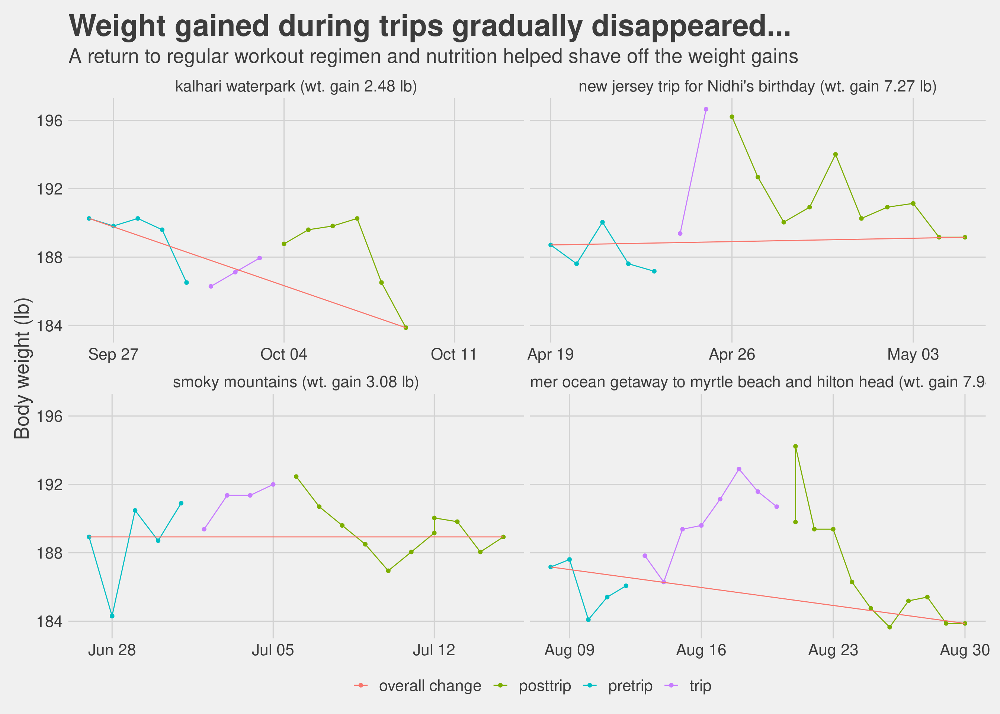

Chapter 7 Other Topics
This chapter covers miscellaneous topics which are quite important but I did not have enough material to give them a chapter of their own so I parked them all here.
7.1 Time Restricted Eating
Time restricted eating (TRE) or as everyone likes to call it “intermittent fasting”. I can end this section by simply saying please read this excellent book called “The Circadian Clock” by Dr Satchin Panda, it will provide you evidence based reasoning you need to try out TRE. I tried time restricted eating while doing exercise 4 to 5 days a week I personally found the results to be good (again, keep in mind this is with a sample size of 1, therefore statistically irrelevant).
As a matter of habit, I now eat within a 12 hour window and it helps me feel light and energetic. I try finishing up dinner by 7 - 7:30pm and usually sleep by 11.30pm. If I have not had dinner by 8pm, then I skip dinner that day and just take a glass of almond milk instead. Some days if I am working late into the night and if feel really hungry then I have half a cup of almond milk and that usually calms the rumblings in the stomach. If you think about it, a 12 hour fasting window may not be as hard to do as it maybe sounds at first. 6 to 8 hours of those 12 hours are hopefully spent in the night sleeping, then add another hour or two before sleeping at night and after waking up in the morning and you have a 12 hour fasting window.
I try doing a 14 hour fasting and 10 hour eating window every now and then, works fine. I have also tried a 22 hour fasting and 2 hour eating window once a week for a few weeks. Other than the fact that the brain says why are you not eating, I did not feel any discomfort. I even exercised on a 22-2 day, no problem at all.
What I have also experienced is that a day of 22-2 TRE does indeed help offset any indiscretions of the day before. I have tried this a couple of times, if I had gone overboard with a heavy dinner, ice-cream or other goodies during the day then doing a 22-2 the next day helps. For the 22-2 TRE, I usually take a coffee for breakfast, a plant based protein shake in the afternoon (just with water), another coffee around 4pm, and then finally dinner around 6.30pm. I have no scientific data on this except my own anecdotal evidence.
Looking for a contrarian view on this? Read this tweet thread about a clinical trial. For me personally, a 12 hour eating window just made sense as it was one of the things that matched conventional wisdom that I had grown up with about having my last meal about 3 to 4 hours before bedtime.
7.2 What about supplements?
We did take supplements for micro-nutrients (vitamins and minerals). To be clear, the intention was not take supplements for muscle building but for general health. Even with the previous protein based diet program that I followed earlier there was a recommendation for different vitamin and minerals supplements so when we started exercising more, the topics of supplements came up organically. We discussed with our trainer and as I started reading more and more, I got more convinced that we should take some micronutrient supplements to augment what we were eating. I did my own research, discussed with my trainer as to which supplements were required and which brands had ingredients which were minimal and safe. I used labdoor.com as one of my starting points for finding out good supplements.
Here is my list:
- Vitamin D
- Vitamin C
- Zinc
- Multi Vitamins
- Fish Oil
- Probiotics
- Amino Acids
- Creatine Monohydrate
Did not start taking these supplements from day 1, this happened over a 6 month period. Do not start any supplements without first consulting with your doctor.
7.3 Small knobs & big knobs
Exercise and nutrition are the big knobs by which we can control weight and general health. As we progressed through our journey, we realized that there are small knobs as well which are needed to fine tune the body’s response during the proverbial last mile. Losing first few pounds is easy, as most people would say, maybe even losing the first 5 pounds is easy, losing the last 5 pounds is insanely hard. That is where the small knobs become extremely important. The small knobs are
Sleep: I have noticed this several times, not having a good sleep shows up unfavorably on the weighing scale the next morning. With my level of exercise now my body demands a good 7 hour sleep.
Making sure your are not getting less calories than what your body needs: if the body is not getting enough calories it will fight to keep whatever fat it has and therefore weight loss will become difficult. I have certainly experienced this.
Stress: we all live extremely busy lives, the demands of work, family and social engagements does cause stress and too much stress is bad for weight loss in the same way it is bad for anything else. The Corona pandemic has helped maybe somewhat in that regards with social engagements much reduced, most of us working from home but of course it has has produced stress of its own.
7.4 For the love of charts
Here are some more charts that I could not fit anywhere else.
7.4.1 How many days did it take to lose every single pound?
Sometimes we get anxious about being stuck at a particular weight or oscillating within a few pounds. As enough data got collected, we could see empirically how many days did we spend at each weight level so that before we start getting anxious we know if we really need to or is it still within an observed range.

7.5 Breakup of the days
We know we lost weight on more days than we gained weight (otherwise this book would not exist), but a good visualization is always welcome.